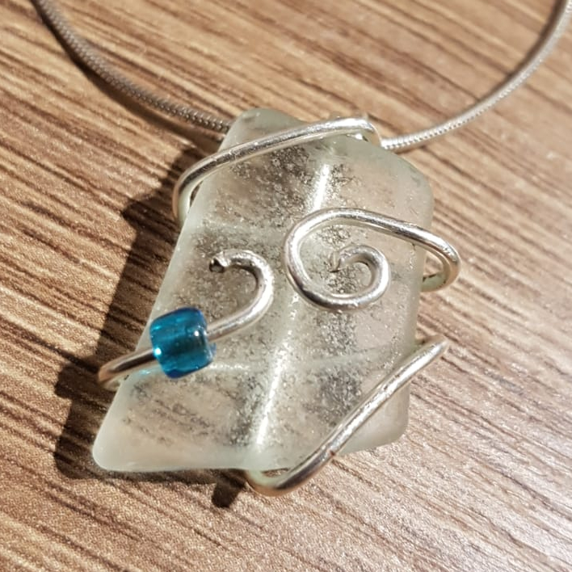
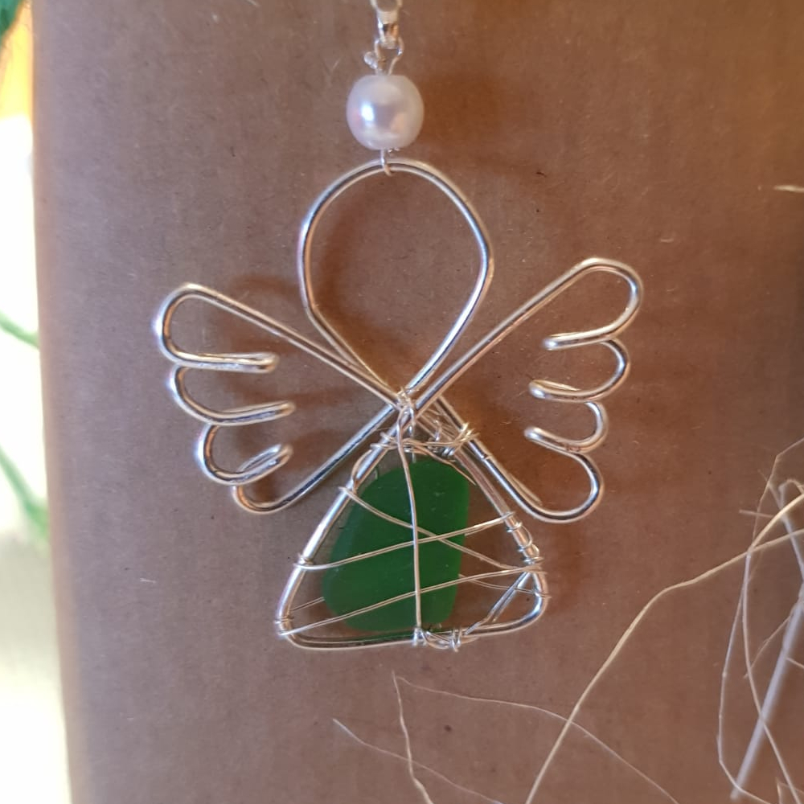

Ich bin Pia, 20 Jahre alt und die Erstellerin dieser Seite.
Ich habe letztes Jahr mein Abitur an einem Beruflichen Gymnasium in Kiel gemacht.
Im Moment mache ich ein Zwischenjahr, in dem ich mich beruflich orientieren und ganz viel Neues lernen möchte.
Dazu gehörte auch ein Praktikum auf Hooge.
Mein ganzes Leben habe ich in der Nähe der Ostsee gewohnt, die mich immer wieder aufs Neue begeistert. Aus diesem Grund habe ich mich dazu entschieden, diese Seite zur Ostsee zu gestalten. In meiner Freizeit halte ich mich gerne an der Ostsee auf und sammle dort verschiedene Materialien aus der Ostsee, wie zum Beispiel Seeglas, Steine, Versteinerungen und Treibholz. Diese verwende ich gerne zum Basteln.

